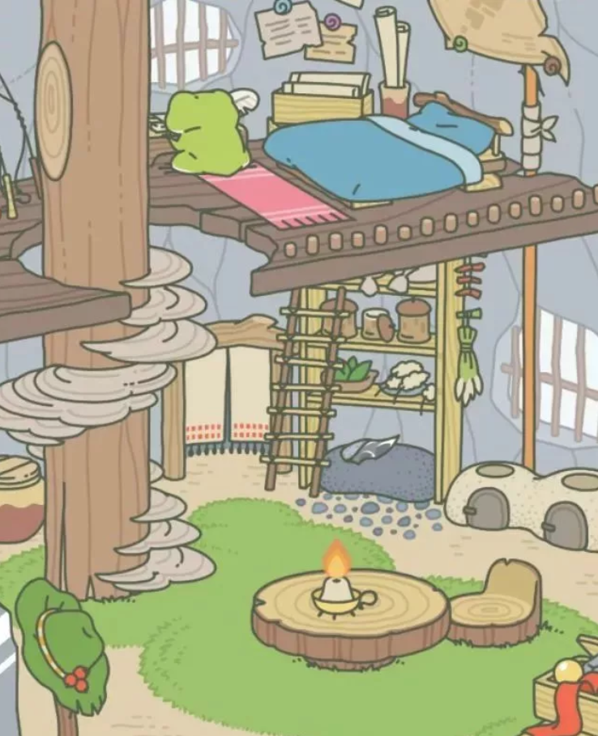
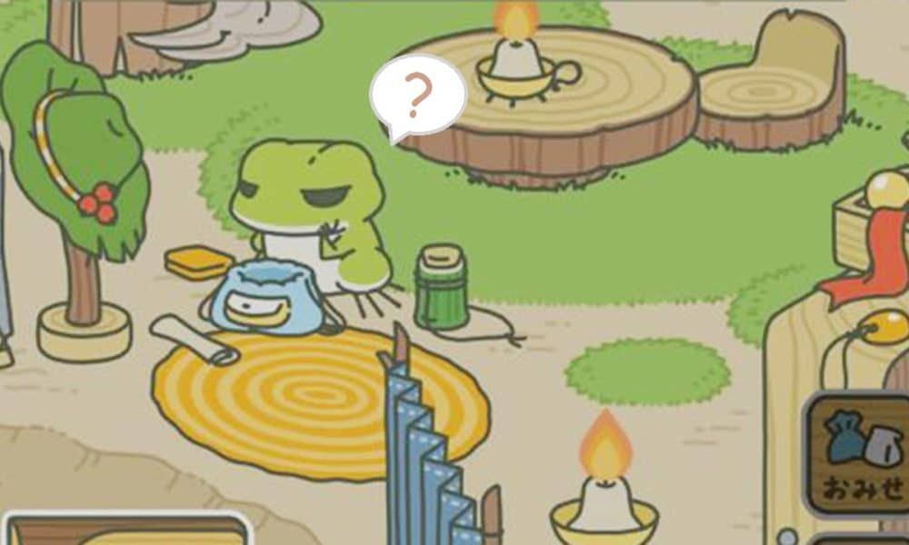
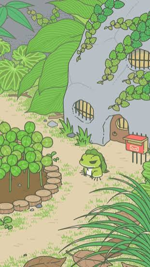

Your only job
The only thing players control is the preparation work for the frog’s travel. The frog spends its time at home studying and playing, and you simply watch.

Clover is the currency
It is needed to buy food and equipment from the store. There are four ways to get it.
Garden
hover or tap to flipClover grows in the garden. Tap it to harvest.
Travels
hover or tap to flipThe frog can bring clover back from its trips.
Friends’ flyers
hover or tap to flipThe frog’s friends can give you clover through flyers, which are advertisements.
Purchase
hover or tap to flipClover can also be bought for a fee.
The shop
You buy food and equipment to prepare the frog for its trip. Item descriptions give only hints, not specifics, so you never quite know what will help.

Ads in the mailbox
As in Neko Atsume, advertisements are delivered to the mailbox. They stay separate from play and appear only when you choose to look.
Settings cover the volume of music and sound effects, and notifications on or off.
